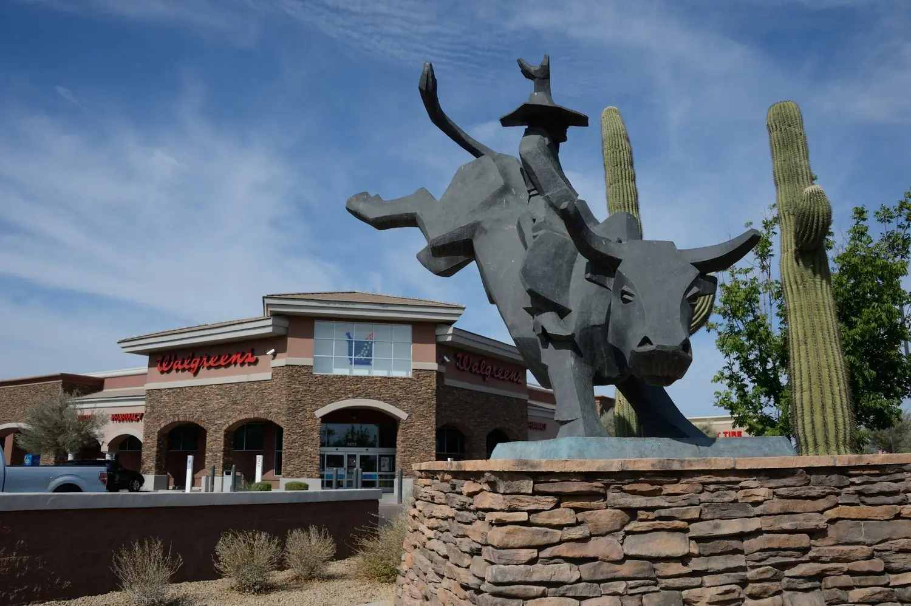
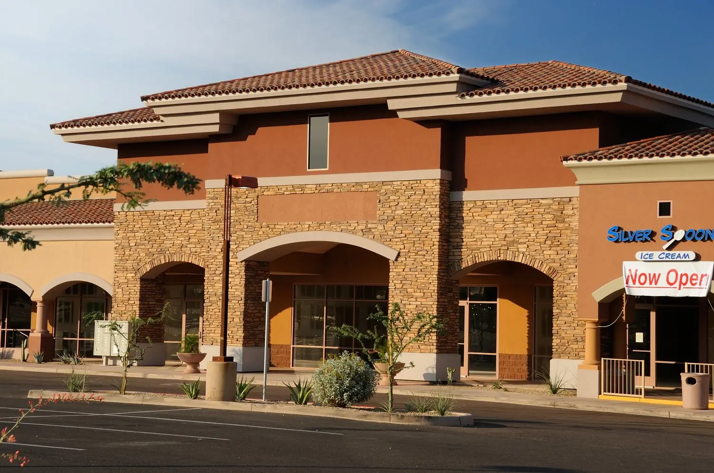
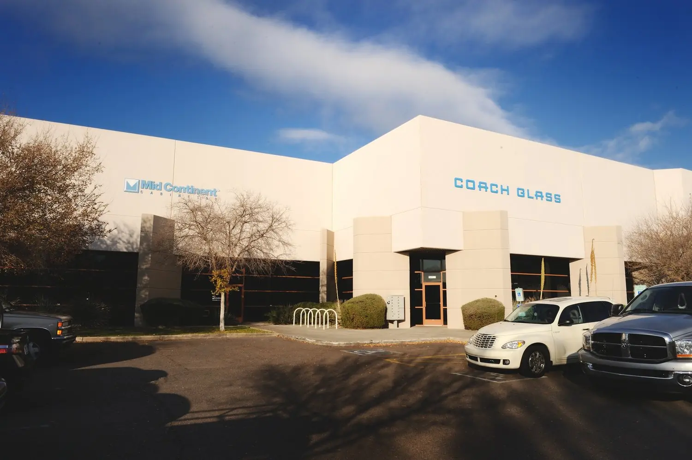
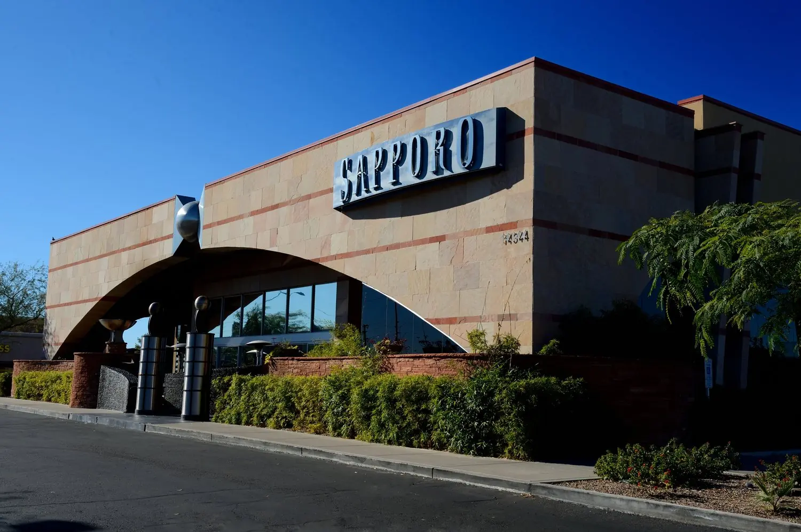
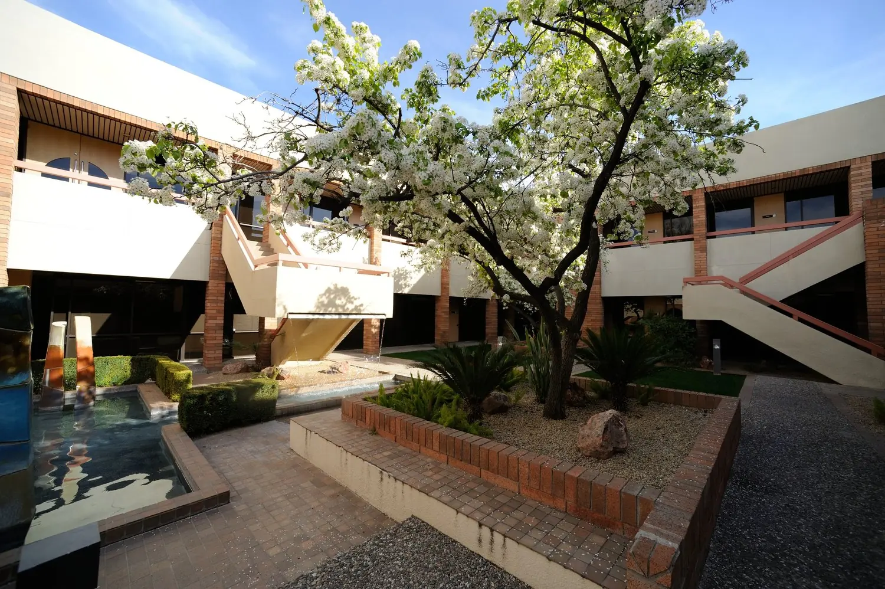
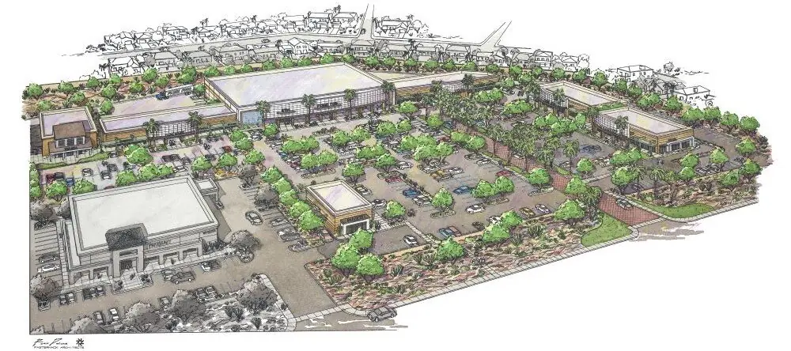

Phoenix, Arizona · Since 1975
4,270+ projects. 6,000 buildings. One Phoenix firm.
Irwin G. Pasternack, AIA + Associates designs retail, commercial and industrial architecture, and develops and manages projects of its own.

Showcase · TEN Distribution Warehouse I
Now home to an Amazon distribution center.
Completed in 2020 at 83rd Avenue and the I‑10, phase one of the TEN Development was designed by the firm and is managed by Pasternack Properties. Warehouse 2 is in development next door.
What is developing nowWhat the firm draws
Retail centers, tilt panel industrial, offices, restaurants.





Architect and developer
The firm builds for itself, too.
In 1978 Irwin Pasternack started developing his first retail project. That experience is offered to investor clients as full development services: site master planning, rezoning, real estate evaluation and contract administration under one roof.
All services